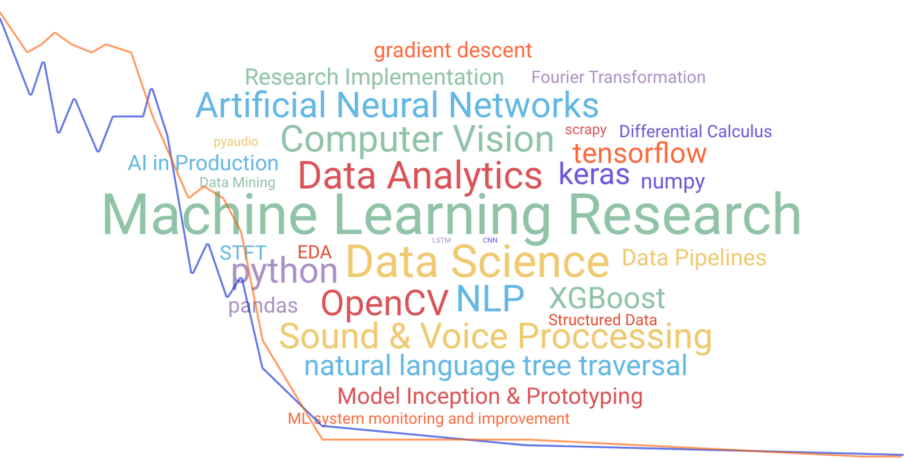

Gundeep Singh
Machine Learning research
& Full stack
Satellite Image Deduplication
For this project, a deduplication dataset was first created using a base satellite images dataset. The steps involved in this step were dataset generation, eda, data compression & preprocessing, transfer learning, cnn training, inference, further optimization techniques.
Read White Paper
View Code
Pre-owned Cars Price Modelling
While working at Spinny, being the first person on the in-house Data Science, I formalized the data science pathway for the cogs involved in impletementing ML in multiple verticals of the organization such as purchase cost, repair estimate, sale price, demand & price prediction. Major part of the job was to predict the cars’ selling price.
Model In Action
Read More
Pre-owned Cars Price Modelling
While working at Spinny, being the first person on the in-house Data Science, I formalized the data science pathway for the cogs involved in impletementing ML in multiple verticals of the organization such as purchase cost, repair estimate, sale price, demand & price prediction. Major part of the job was to predict the cars’ selling price.
Model In Action
Read More
On Device Hot-Keyword Detection
Ever wondered why you can’t rename “Ok Google” or “Alexa” to a custom keyword like Jarvis. This question made me start my ML journey. The project itself wasn’t a great success in terms of machine learning, however, I was able to make an android app that listened to and acted on custom keywords even in vernacular languages.
Bitbucket
Watch Video
Mobile and Web Apps
I have worked on multiple frontend and backend products and created apps from scratch as well as worked on a large scale app with 100m+ downloads on Play Store. Following a UX-centric approach while developing UI and backends, I tend to make the code and product as intuitive as possible while keeping the future scope in mind and documenting extensively.
Read More
Mobile and Web Apps
I have worked on multiple frontend and backend products and created apps from scratch as well as worked on a large scale app with 100m+ downloads on Play Store. Following a UX-centric approach while developing UI and backends, I tend to make the code and product as intuitive as possible while keeping the future scope in mind and documenting extensively.
Read More
“Our intelligence is what makes us human, and AI is an extension of that quality.” – Yann LeCun
I'm always keen to work on interesting work on:

I'm always keen to work on interesting work on:
Design by Gundeep Singh
All Rights Reserved
Images from Unsplash